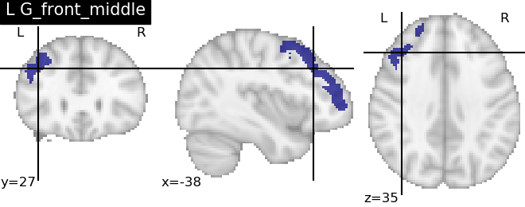
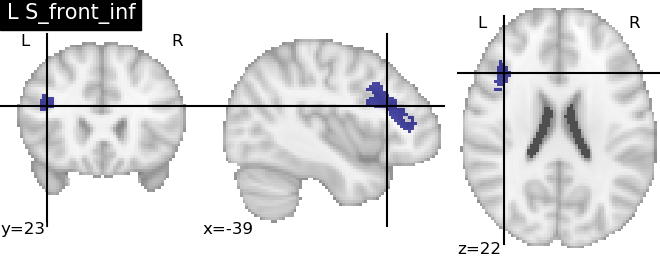
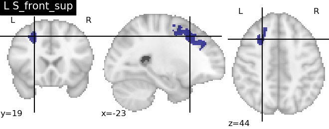
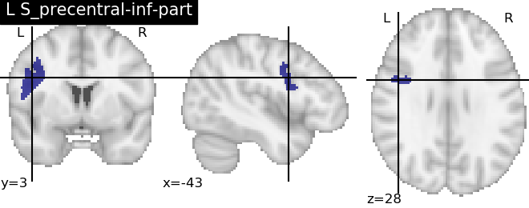

Note
Click here to download the full example code
Loading and Querying the Destrieux et al. Atlas¶
Uploading the Destrieux regions NeuroLang and executing a simple query.
import nilearn
import numpy as np
from matplotlib import pyplot as plt
from nilearn import plotting
import nibabel as nib
from neurolang.frontend import NeurolangPDL, ExplicitVBR
nl = NeurolangPDL
Out:
/Users/dwasserm/anaconda/envs/root3.8-neurosynth/lib/python3.8/site-packages/sklearn/externals/joblib/__init__.py:15: FutureWarning: sklearn.externals.joblib is deprecated in 0.21 and will be removed in 0.23. Please import this functionality directly from joblib, which can be installed with: pip install joblib. If this warning is raised when loading pickled models, you may need to re-serialize those models with scikit-learn 0.21+.
warnings.warn(msg, category=FutureWarning)
/Users/dwasserm/anaconda/envs/root3.8-neurosynth/lib/python3.8/site-packages/sklearn/utils/deprecation.py:144: FutureWarning: The sklearn.utils.testing module is deprecated in version 0.22 and will be removed in version 0.24. The corresponding classes / functions should instead be imported from sklearn.utils. Anything that cannot be imported from sklearn.utils is now part of the private API.
warnings.warn(message, FutureWarning)
<frozen importlib._bootstrap>:219: RuntimeWarning: numpy.ufunc size changed, may indicate binary incompatibility. Expected 192 from C header, got 216 from PyObject
/Users/dwasserm/anaconda/envs/root3.8-neurosynth/lib/python3.8/site-packages/sklearn/utils/deprecation.py:144: FutureWarning: The sklearn.datasets.base module is deprecated in version 0.22 and will be removed in version 0.24. The corresponding classes / functions should instead be imported from sklearn.datasets. Anything that cannot be imported from sklearn.datasets is now part of the private API.
warnings.warn(message, FutureWarning)
Load the Destrieux example from nilearn as a fact list¶
atlas_destrieux = nilearn.datasets.fetch_atlas_destrieux_2009()
image = nib.load(atlas_destrieux['maps'])
image_data = image.get_data()
Out:
/Users/dwasserm/anaconda/envs/root3.8-neurosynth/lib/python3.8/site-packages/numpy/lib/npyio.py:2372: VisibleDeprecationWarning: Reading unicode strings without specifying the encoding argument is deprecated. Set the encoding, use None for the system default.
output = genfromtxt(fname, **kwargs)
/Users/dwasserm/sources/NeuroLang/examples/plot_load_destrieux.py:29: DeprecationWarning: get_data() is deprecated in favor of get_fdata(), which has a more predictable return type. To obtain get_data() behavior going forward, use numpy.asanyarray(img.dataobj).
* deprecated from version: 3.0
* Will raise <class 'nibabel.deprecator.ExpiredDeprecationError'> as of version: 5.0
image_data = image.get_data()
Load the regions into Voxel-style regions
region_table = []
for label, name in atlas_destrieux['labels']:
if label == 0:
continue
voxels = np.transpose((image_data == label).nonzero())
if voxels.shape[0] == 0:
continue
r = ExplicitVBR(
voxels,
image.affine, image_dim=image.shape
)
region_table.append((str(name.decode('utf8')), r))
Initialise the atlas to the Neurolang Engine add two symbols to split left and right structures in the Destrieux atlas and add the atlas.
nl = NeurolangPDL()
@nl.add_symbol
def lh(x: str) -> bool:
return x.startswith('L ')
@nl.add_symbol
def rh(x: str) -> bool:
return x.startswith('R ')
destrieux = nl.add_tuple_set(region_table, name='destrieux')
with nl.environment as e:
e.superior_sts_l[e.name, e.r] = (
e.destrieux('L S_temporal_sup', e.superior_sts_l) &
e.destrieux('L S_central', e.central_l) &
e.anatomical_superior_of(e.r, e.superior_sts_l) &
e.anatomical_anterior_of(e.r, e.central_l) &
e.lh(e.name) &
e.destrieux(e.name, e.r)
)
result = nl.query((e.name, e.r), e.superior_sts_l(e.name, e.r))
for name, region in result:
print(name)
plt.figure()
plotting.plot_roi(region.spatial_image(), title=name)


- 

- 
- 

- 
Out:
L G_and_S_cingul-Mid-Ant
/Users/dwasserm/anaconda/envs/root3.8-neurosynth/lib/python3.8/site-packages/nilearn/_utils/niimg.py:116: DeprecationWarning: get_data() is deprecated in favor of get_fdata(), which has a more predictable return type. To obtain get_data() behavior going forward, use numpy.asanyarray(img.dataobj).
* deprecated from version: 3.0
* Will raise <class 'nibabel.deprecator.ExpiredDeprecationError'> as of version: 5.0
dtype = _get_target_dtype(niimg.get_data().dtype, dtype)
/Users/dwasserm/anaconda/envs/root3.8-neurosynth/lib/python3.8/site-packages/nilearn/plotting/img_plotting.py:325: DeprecationWarning: get_data() is deprecated in favor of get_fdata(), which has a more predictable return type. To obtain get_data() behavior going forward, use numpy.asanyarray(img.dataobj).
* deprecated from version: 3.0
* Will raise <class 'nibabel.deprecator.ExpiredDeprecationError'> as of version: 5.0
data = anat_img.get_data()
/Users/dwasserm/anaconda/envs/root3.8-neurosynth/lib/python3.8/site-packages/scipy/ndimage/measurements.py:305: DeprecationWarning: In future, it will be an error for 'np.bool_' scalars to be interpreted as an index
return _nd_image.find_objects(input, max_label)
/Users/dwasserm/anaconda/envs/root3.8-neurosynth/lib/python3.8/site-packages/nilearn/plotting/displays.py:600: DeprecationWarning: Using or importing the ABCs from 'collections' instead of from 'collections.abc' is deprecated since Python 3.3, and in 3.9 it will stop working
if isinstance(axes, collections.Sequence):
/Users/dwasserm/anaconda/envs/root3.8-neurosynth/lib/python3.8/site-packages/nilearn/image/resampling.py:665: DeprecationWarning: get_data() is deprecated in favor of get_fdata(), which has a more predictable return type. To obtain get_data() behavior going forward, use numpy.asanyarray(img.dataobj).
* deprecated from version: 3.0
* Will raise <class 'nibabel.deprecator.ExpiredDeprecationError'> as of version: 5.0
data = img.get_data()
L G_front_middle
L S_front_inf
L S_front_sup
L S_precentral-inf-part
Total running time of the script: ( 0 minutes 6.865 seconds)